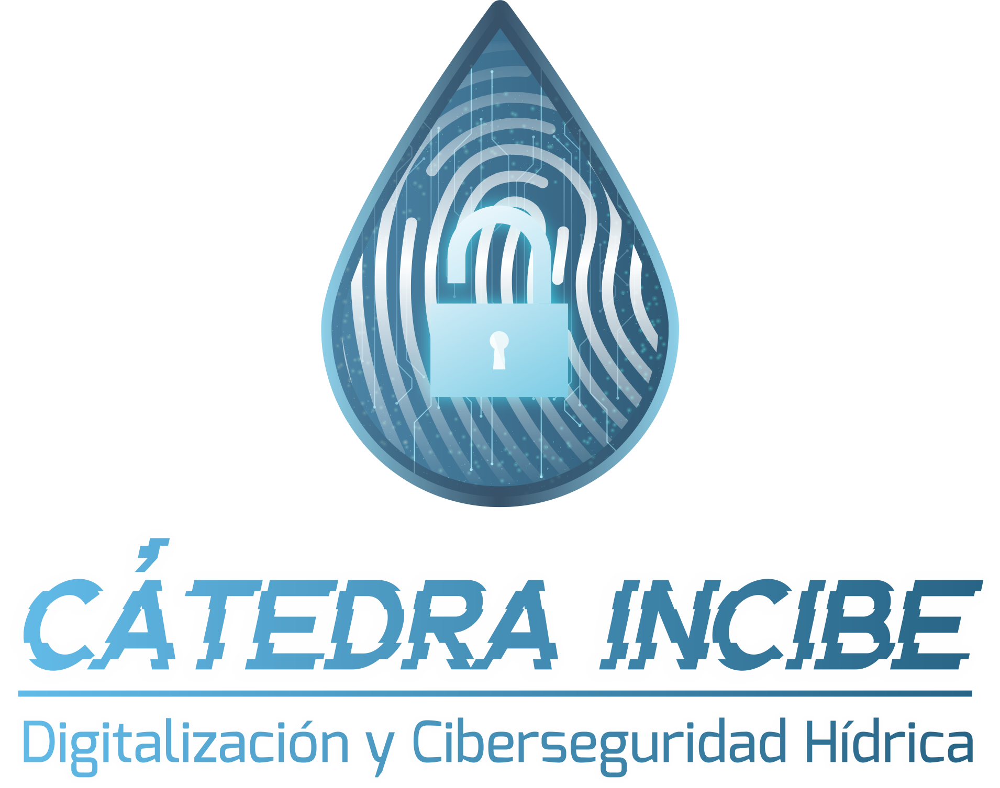

Desde la Universitat de Girona nos complace anunciar el lanzamiento de la Cátedra INCIBE de Digitalización y Ciberseguridad Hídrica, alineada con la Estrategia Nacional de Ciberseguridad, el Plan de Recuperación, Transformación y Resiliencia de España, y el plan europeo NextGenerationEU.
La Directiva UE 2022/2577, relativa a la resiliencia de las entidades críticas, vigente desde enero de 2023, considera críticos a los sectores del agua potable y residual, así como a las infraestructuras digitales. Actualmente, la gestión del agua en España debe afrontar desafíos significativos, enmarcados en la Emergencia Climática y el frecuente estrés hídrico en diversas cuencas hidrológicas. La complejidad aumenta con los esfuerzos recientes por modernizar y optimizar el ciclo del agua mediante el PERTE de digitalización.
El objetivo de la Cátedra es el de fomentar el desarrollo de conocimientos y capacidades en ciberseguridad aplicada al sector hídrico, promoviendo la cultura de ciberseguridad en España, generando, transmitiendo y difundiendo conocimientos y habilidades especializadas en este ámbito.
La Cátedra INCIBE cuenta con un presupuesto aproximado de 750.000 euros y un equipo multidisciplinario de expertos en criminología, ingeniería de recursos hídricos y tecnología de computadores. Además, colaboramos con entidades del sector público y privado como Agbar, Catalan Water Partnership, Eurecat, ICRA y la Agencia Catalana de Ciberseguridad, y esperamos ampliar nuestra red de colaboración a lo largo de los próximos dos años (2024/2025).
La Cátedra se centrará en desarrollar nuevos conocimientos y tecnologías en las siguientes áreas:
• Soluciones para la seguridad de datos y prevención de su uso malicioso.
• Ciberresiliencia de la cadena de suministro.
• Sistemas innovadores para el análisis de seguridad de dispositivos IoT.
• Ciberdiagnóstico automatizado para pymes y autónomos.
• Investigación en entornos simulados.
• Detección de víctimas de ciberdelitos.
Las actividades planeadas incluyen:
• 39 eventos de formación y capacitación para empresas, técnicos y estudiantes.
• Un congreso nacional.
• 10 proyectos de investigación con empresas.
• Más de 14 actividades dirigidas al público en general.
• La ejecución de dos Cyber-Range, ejercicios de ciberseguridad para la formación de expertos.
MENÚ
